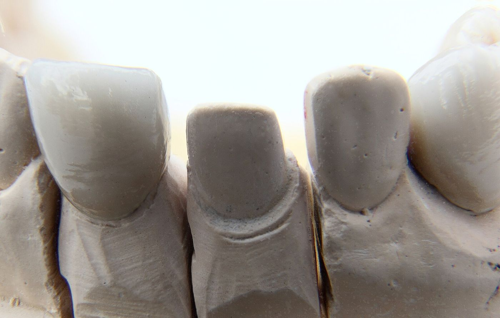
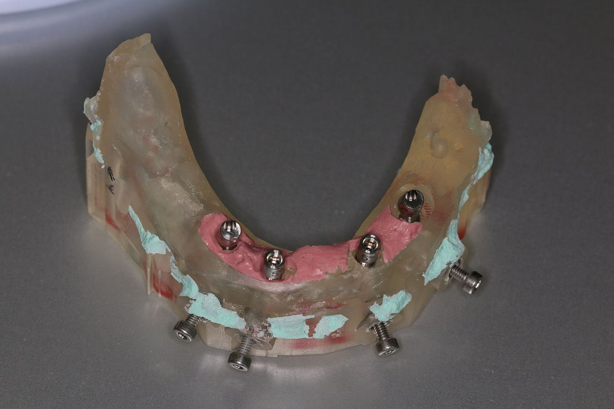
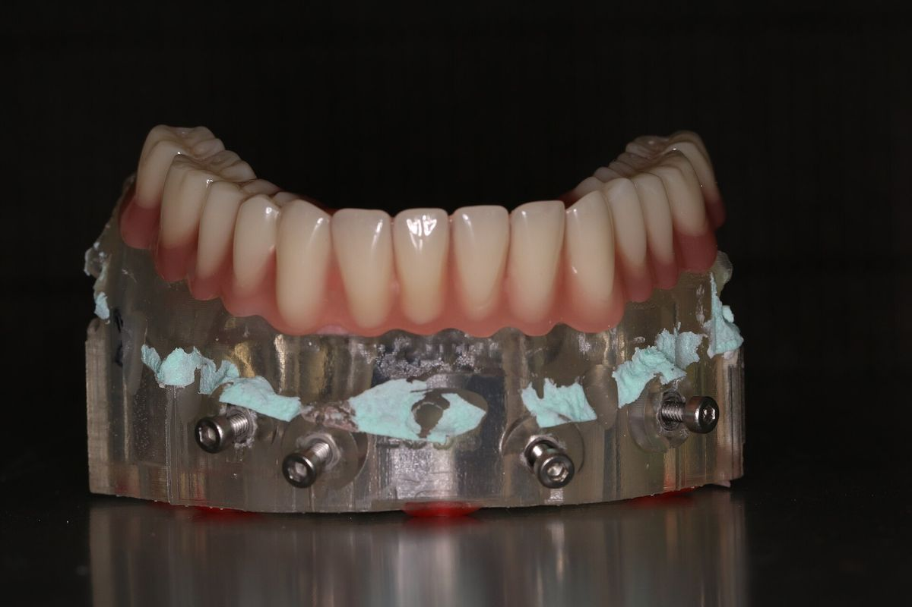
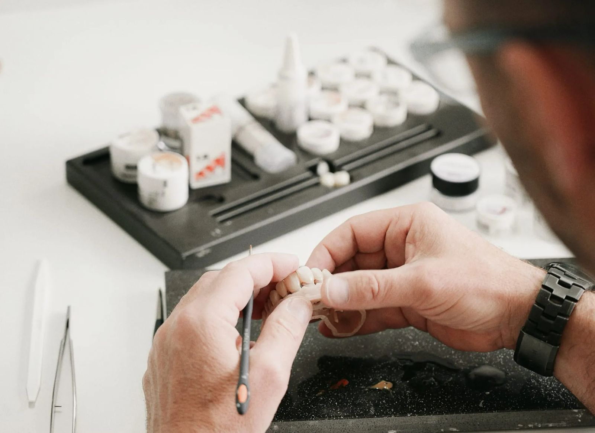
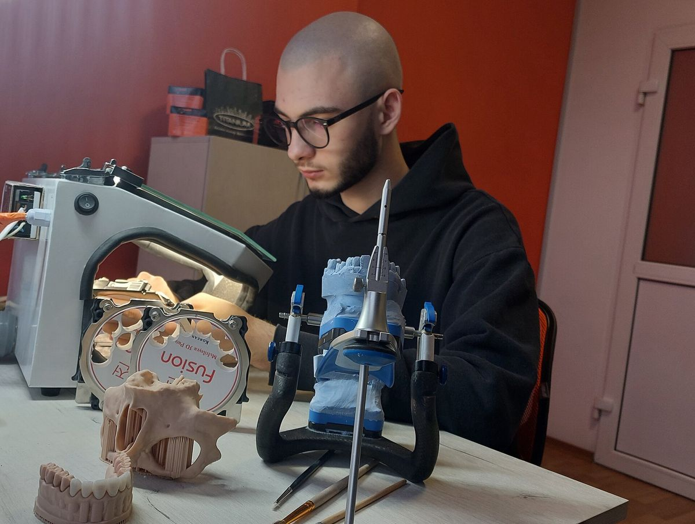
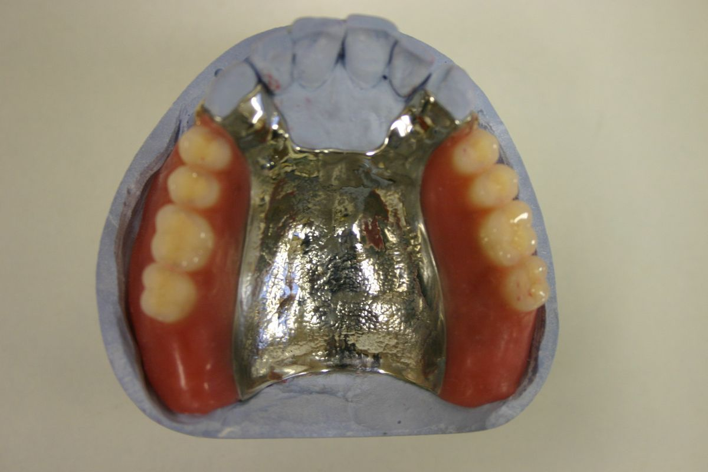
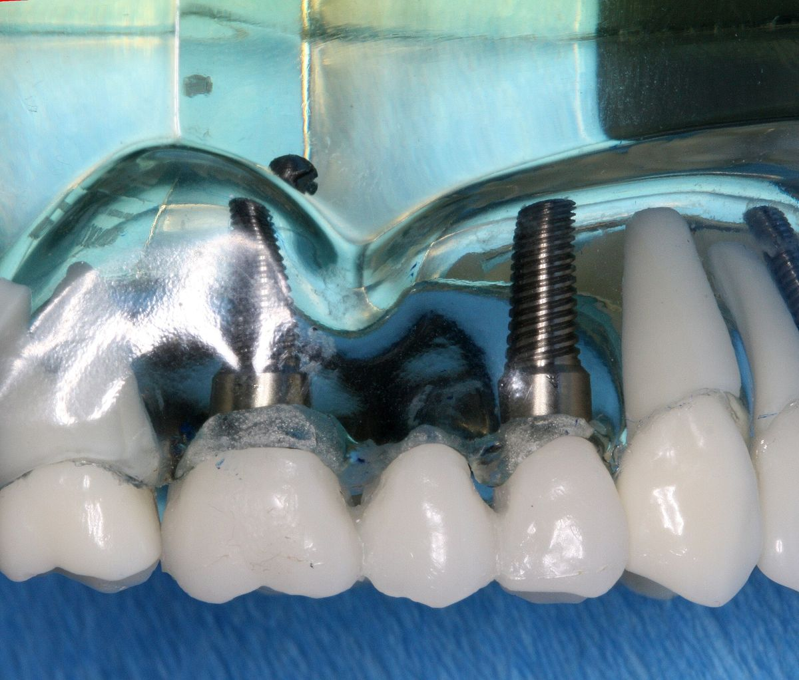
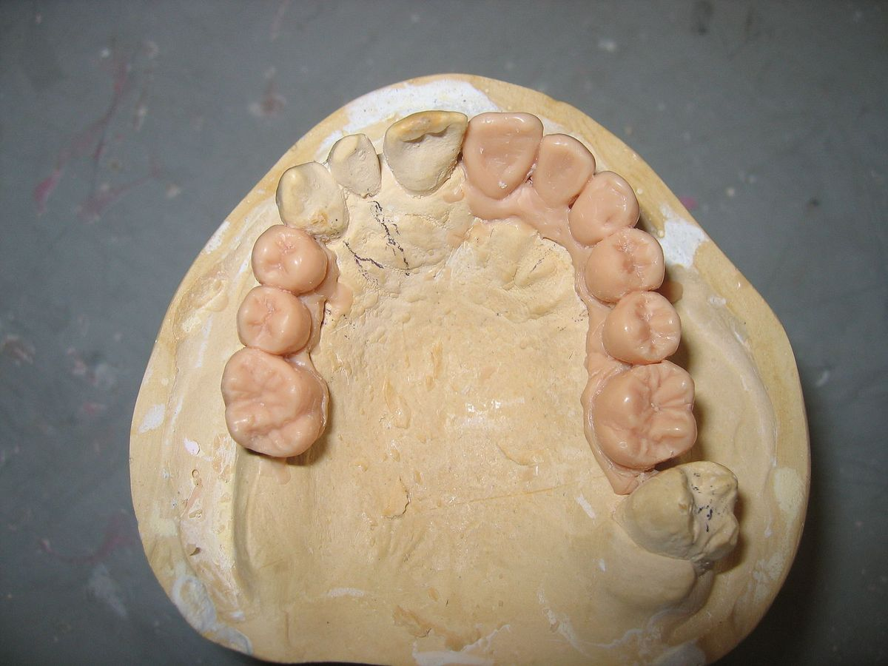
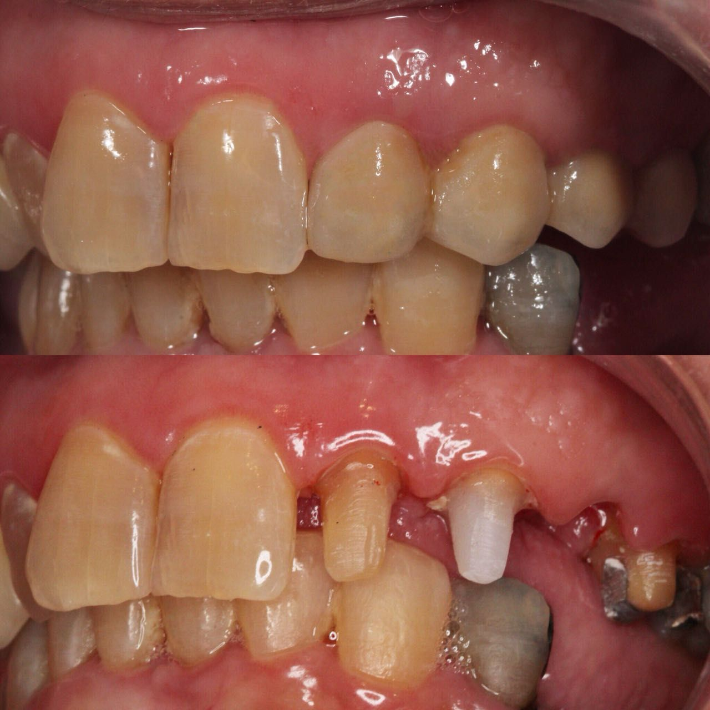

Créditos de imágenes
Las fotografías ilustrativas de este sitio proceden de Wikimedia Commons y se usan bajo licencias Creative Commons. Se han redimensionado y recortado para la web.

VMK-Krone Dental crown Focus stacking with freeware CombineZP 07Bin im Garten · Wikimedia Commons · CC BY-SA 3.0 · redimensionada
Dentaltechnicianmodel1Zypcu · Wikimedia Commons · CC BY-SA 3.0 · redimensionada
Dentaltechnicianmodel2Zypcu · Wikimedia Commons · CC BY-SA 3.0 · redimensionada
Lab-hands-craftACE DNTL STUDIO · Wikimedia Commons · CC BY-SA 4.0 · redimensionada
Dental technician 2CifraLab · Wikimedia Commons · CC BY-SA 4.0 · redimensionada
Metal plate dentureHanabishi · Wikimedia Commons · CC BY-SA 3.0 · redimensionada
Implant retained bridge modelIan Furst · Wikimedia Commons · CC BY-SA 3.0 · redimensionada
DiagnostWaxUPDRosenbach · Wikimedia Commons · CC BY-SA 3.0 · redimensionada
Zirconia bridgeAmirAttallah · Wikimedia Commons · CC BY-SA 4.0 · redimensionada Prettau Bridge - (TLZ-IB)Roedentallab · Wikimedia Commons · CC BY-SA 3.0 · redimensionada
Prettau Bridge - (TLZ-IB)Roedentallab · Wikimedia Commons · CC BY-SA 3.0 · redimensionada Dental setup for implantsCoronation Dental Specialty Group · Wikimedia Commons · CC BY-SA 3.0 · redimensionada
Dental setup for implantsCoronation Dental Specialty Group · Wikimedia Commons · CC BY-SA 3.0 · redimensionada Feldspathic VM9 Porcelain Crowns -side viewAmirAttallah · Wikimedia Commons · CC BY-SA 4.0 · redimensionada
Feldspathic VM9 Porcelain Crowns -side viewAmirAttallah · Wikimedia Commons · CC BY-SA 4.0 · redimensionada Single Unit Zirconia Anterior Dental CrownJames Roback, UticaDentalLab · Wikimedia Commons · CC BY-SA 4.0 · redimensionada
Single Unit Zirconia Anterior Dental CrownJames Roback, UticaDentalLab · Wikimedia Commons · CC BY-SA 4.0 · redimensionada